请你介绍一下 AI Agent 的记忆机制，并说明在实际开发中应该如何设计记忆模块？
👔面试官：你来讲讲 Agent 的记忆机制，分哪几种，各自有什么作用？
🙋♂️我：有短期记忆和长期记忆……短期就是当前对话历史，长期就是存到数据库里的内容？
👔面试官：分类方向对，但不够完整。短期记忆和长期记忆之外还有两种，你知道是哪两种吗？
🙋♂️我：还有……缓存？或者工具调用的结果？
👔面试官：不是，另外两种是感知记忆和实体记忆。感知记忆是当前输入的原始内容，实体记忆是从对话里提炼出来的结构化事实。那长期记忆一般用什么技术来实现？
🙋♂️我：向量数据库？用 embedding 存起来做语义检索？
👔面试官：对，但光会存还不够。你有没有想过记忆模块真正的难点在哪里：存什么内容值得存、用什么介质存、什么时机取出来用，这三个问题才是设计记忆系统的核心。
把四种记忆类型和「存什么、怎么存、什么时候取」这三个工程问题答全，才是一个完整的记忆模块方案。
💡 简要回答
Agent 需要外部状态才能在多步任务中保持连续性；跨任务记忆是可选能力，必须配合数据治理。
这里用四层作为学习上的分类：感知记忆（当前输入）、短期上下文/任务 State、长期存储和实体记忆。它不是统一协议或心理学标准；长期存储也不一定使用向量检索。
实际设计时要解决三个核心问题：存什么、怎么存、什么时候取出来用，根据信息类型选合适的存储方式，再搭配主动检索和按需检索两种策略使用。
📝 详细解析
没有记忆的 Agent 有多不好用
要搞清楚记忆机制为什么重要，得先感受一下「没有记忆」的 Agent 到底有多难用。
你今天告诉 Agent「我喜欢代码风格简洁、变量命名用英文、不要过度注释」，它帮你完成了今天的任务。明天你重新打开对话，让它帮你写一个新功能，它输出的代码风格完全和昨天说好的不一样，中文注释一堆，变量名也很啰嗦。
你很困惑，但对 Agent 来说，昨天的对话压根不存在，每次对话都是全新的开始，之前达成的所有约定都消失了。
这还只是「偏好记忆」的问题。更严重的是「任务状态」的问题：Agent 在执行一个多步任务的过程中，如果没有短期记忆来维持状态，它就不知道自己上一步做了什么、当前处于哪个阶段、已经收集到了哪些信息。
你让它「先查资料，再整理成报告」，没有记忆的话，整理报告这一步根本不知道查到了什么。
记忆，是 Agent 从「单次问答工具」变成「真正助手」的关键分水岭。有了记忆，它才能积累对你的了解，才能在多步任务中保持连贯，才能跨任务沉淀知识。
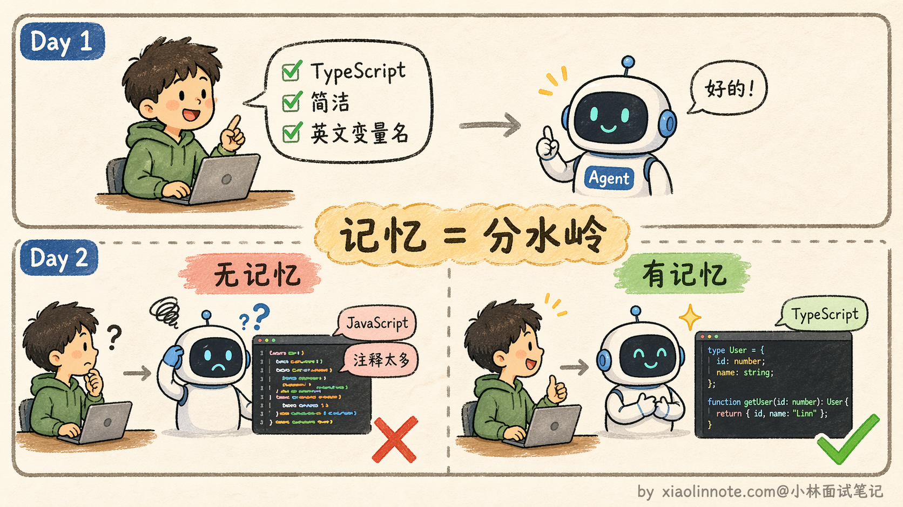
四种记忆类型（从最短暂到最持久）
记忆机制其实可以对应到人类的记忆系统来理解，从最短暂到最持久，分四个层次。这里要提醒一句：下面的「感知 / 短期 / 长期 / 实体」是工程上方便把记忆管理拆成四档的一种划分，借用了认知科学的一些词（情节、语义、程序），但和心理学严格意义上的分类不完全一致，目的是帮你建立直觉，不是学术标准。
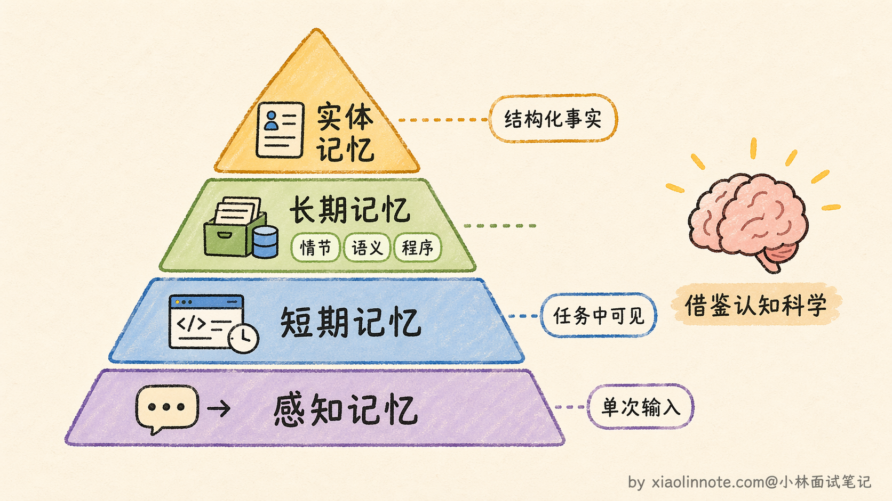
第一层：感知记忆（Sensory Memory）
这是最短暂的一层，就是「当前这次调用的原始输入」，用户发来的这条消息、上传的截图、传入的文档。它的生命周期只有一次调用，处理完就消失，不会主动保留。类比到人的话，就是你刚听到的一句话，如果没有主动去记，几秒后就忘了。感知记忆就是这个「刚进来还没处理」的原始感知，它存在的意义是给模型提供一个「入口」来接收外部信息。
第二层：短期记忆（Short-term Memory）
这是当前任务传给模型的 messages 和结构化 State，可能包括用户输入、模型输出、工具结果和进度。运行时可以裁剪、摘要或持久化检查点；任务结束后是否清理取决于审计、恢复和保留策略。工作台有上下文限制，不能把所有历史永久直接塞进 prompt。
第三层：长期记忆（Long-term Memory）
这是跨任务保留的信息，存在向量库、关系库、Key-Value 或事件存储中，并受租户、权限、保留和删除策略约束。非结构化经验适合语义检索，精确偏好、状态和权限字段更适合结构化查询；两者常常组合使用。
长期记忆其实不是铁板一块，它还可以细分成三种子类型，每种存的东西和用途都不一样。
第一种是「情节记忆」（Episodic Memory），存的是具体的事件经历。比如「上周二用户让我写了一个 Python 爬虫，中间遇到了反爬问题，最后用 Selenium 解决了」，这是一段完整的任务经历，包含了时间、场景、过程和结果。情节记忆的价值在于，当 Agent 遇到类似的新任务时，可以检索出历史上的相似经历，参考上次是怎么解决的，避免重复踩坑。
第二种是「语义记忆」（Semantic Memory），存的是从多次经历中提炼出来的通用知识和规律。比如经历了好几次反爬问题之后，Agent 沉淀出一条规律：「当目标网站有 JavaScript 动态渲染时，requests 库抓不到内容，应该优先考虑 Selenium 或 Playwright」。这不再是某一次具体的事件记录，而是跨多次经验总结出来的抽象知识。语义记忆的信息密度更高，检索时也更容易命中，因为它直接存储的就是结论而不是过程。
第三种是「程序记忆」（Procedural Memory），存的是怎么做某件事的操作流程。比如「部署一个 Flask 应用的标准步骤：创建虚拟环境 -> 安装依赖 -> 配置 gunicorn -> 设置 nginx 反向代理 -> 启动服务」，这是一套可以直接复用的操作 SOP。程序记忆在处理重复性任务时特别有用，Agent 不需要每次都从头推理，直接调出对应的 SOP 执行就行，既快又稳。
三种子类型各有侧重，实际项目中通常会混合使用。情节记忆提供具体的参考案例，语义记忆提供抽象的知识规律，程序记忆提供可复用的操作流程，三者配合起来才能让 Agent 的长期记忆真正好用。
第四层：实体记忆（Entity Memory）
这层比长期记忆更精炼，它不是存原文，而是把对话中出现的关键实体和事实主动提取出来，存成结构化字段。比如「用户偏好 Python」「客户预算是 5 万」「项目截止日是 3 月底」，这些是从对话里提炼出来的「结论」，而不是原始对话本身。类比到人的话，就像医生的病历卡，不是把问诊录音存起来，而是结构化地记录「主诉：头痛三天；诊断：偏头痛；用药：布洛芬」。信息密度高，查询快，而且不受原始表述方式影响。
四层记忆横向对比：
| 类型 | 载体 | 容量 | 生命周期 | 访问方式 |
|---|---|---|---|---|
| 感知记忆 | 当次输入 | 极小 | 单次调用 | 即时访问 |
| 短期记忆 | context window | 受 token 限制 | 一次任务 | 直接读取 |
| 长期记忆 | 向量/关系/键值/事件存储 | 受容量、保留和治理策略限制 | 可持久 | 语义或结构化查询 |
| 实体记忆 | 结构化存储 | 受容量和治理策略限制 | 可持久 | 精确查询 |
实际设计记忆模块的三个核心问题
理解了四种记忆类型，设计记忆模块时还要解决三个工程问题。
第一个：存什么？
不是所有内容都值得写入长期记忆，存太多反而会引入噪音，让检索的精准度下降。判断标准其实很简单：「这条信息，下次任务开始时如果知道，会让 Agent 做得更好吗？」
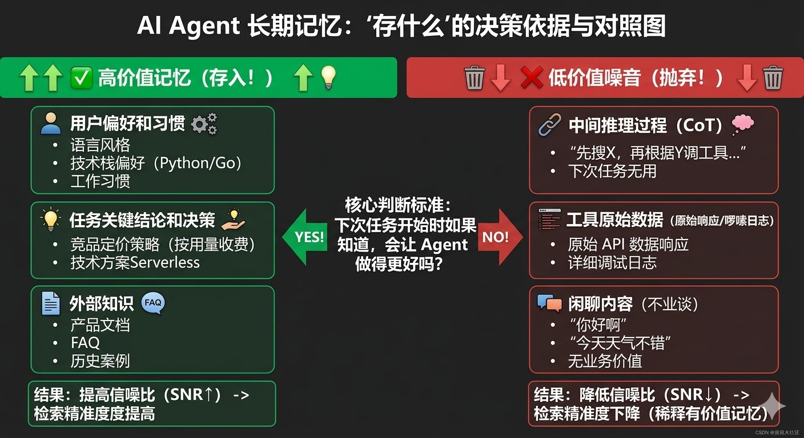
通常值得存的有三类：用户偏好和习惯（语言风格、技术栈偏好、工作习惯）、任务执行中产生的关键结论和决策（比如「调研发现竞品 A 的定价策略是按用量收费」）、以及外部知识（产品文档、FAQ、历史案例）。
不值得存的：中间推理过程、工具返回的原始数据（日志太啰嗦）、闲聊内容。这些存进去只会稀释有价值的记忆，让检索的信噪比下降。
第二个：怎么存？
根据信息的类型选合适的存储介质，而不是一刀切地全部塞进向量数据库。
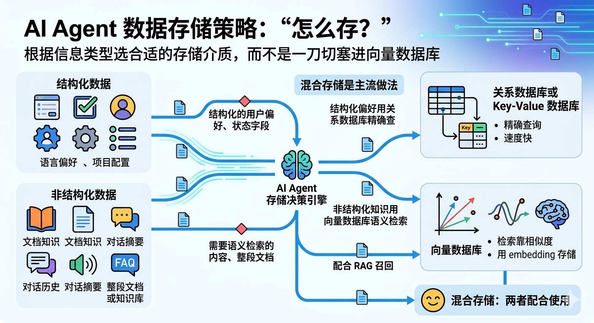
需要语义检索的内容，比如文档知识、对话摘要这类非结构化文本，可以用 embedding 编码后做相似度检索；结构化用户偏好、状态和权限字段更适合关系库或 Key-Value 查询。文档知识是否用向量库，还要看过滤、全文检索、更新和一致性要求。
一个常见基线是混合存储：结构化偏好用关系库精确查，非结构化知识和历史用向量检索；是否采用要通过查询集、延迟、成本和隐私要求验证。
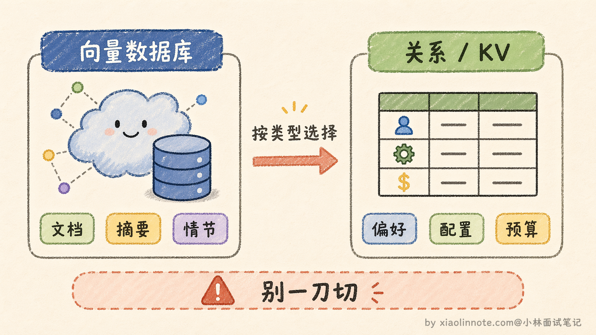
第三个：什么时候取出来用？
这个问题有两种策略，实践中通常结合使用。
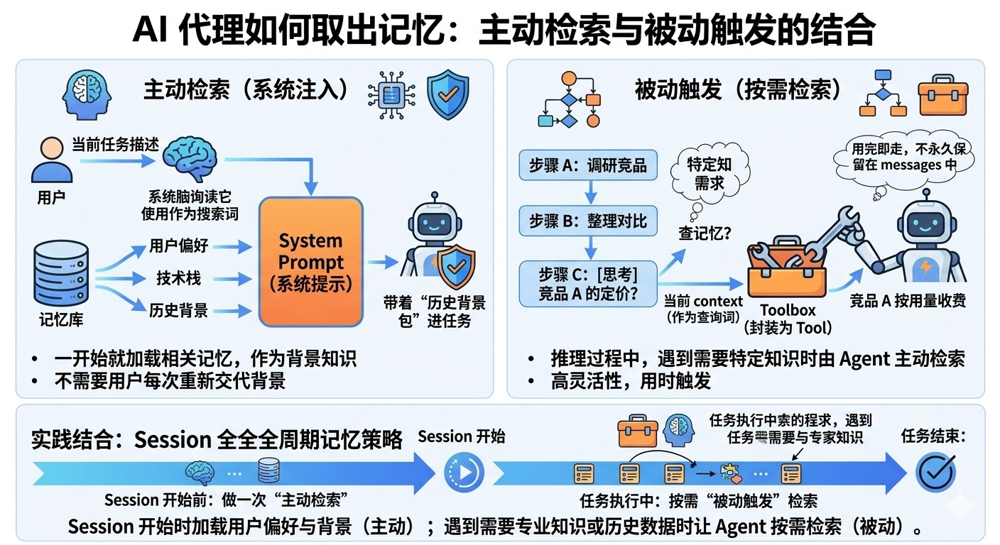
第一种叫「主动检索」，在任务开始前，用当前任务的描述去检索相关记忆，把结果注入 system prompt 作为背景知识。这样 Agent 一开始就带着「历史记忆」进入任务，不需要用户每次重新交代背景。第二种叫「被动触发」，Agent 在推理过程中，判断当前步骤需要某类特定知识时，主动发起检索。具体做法是把「查记忆」封装成一个 Tool，让 Agent 自己决定什么时候调。这种方式更灵活，但依赖模型判断什么时候该去查。
实践上可以结合：session 开始时加载少量经过权限过滤的偏好和背景，执行中按需检索；不要把未经筛选的长期记忆直接注入高优先级 system prompt。
Context Window 管理：短期记忆的「工作台」不够大怎么办
短期记忆存在 context window 里，而 context window 是有 token 上限的。一个复杂的多步任务，对话历史越来越长，工具返回的结果越来越多，很快就会把 context window 塞满。满了之后新的内容就进不去了，或者被迫截断早期的历史，Agent 就会「失忆」，不知道前面做了什么。
这个问题在实际项目中非常常见，解决方案有好几种思路，从简单到复杂都有。
最简单的是「滑动窗口」，只保留最近 N 轮对话，更早的历史直接丢弃。好处是实现简单，代价是早期的重要信息可能被丢掉。比如用户在第一轮就说了「所有代码用 TypeScript」，到了第十轮这条信息被滑出窗口了，Agent 又开始写 JavaScript，用户就会很崩溃。
进阶一点的做法是「摘要压缩」。当历史长度接近上限时，用 LLM 把早期的对话历史压缩成一段摘要，替换掉原始的冗长历史。比如把前面十轮的详细对话压缩成「用户要求用 TypeScript 编写一个 REST API，已完成数据库设计和路由定义，当前正在实现用户认证模块」，一段话就把关键信息保留了，token 占用从几千降到几百。代价是压缩过程本身会丢失细节，而且需要额外的 LLM 调用来做摘要。
还有一种做法是把不常用但重要的信息「卸载」到持久化存储里。执行过程中产生的中间结果，如果后面可能用到，可以按任务/租户/版本写入可检索存储，并保留原始来源和删除句柄；需要时再召回，而不是默认全部写进向量数据库。
这三种传统方案已经能解决大部分场景的问题了，但最近两年出现了一些专门为 Agent 记忆设计的开源框架，把上面这些策略做了更系统的封装，值得了解一下。
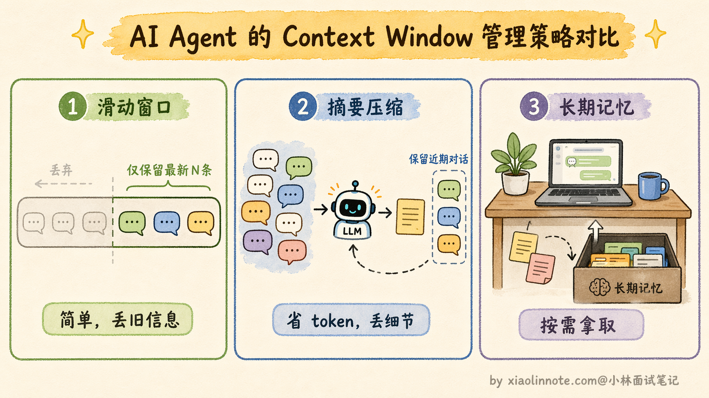
Mem0 等记忆框架把记忆管理抽成服务层，通常提供新增、搜索、去重或更新等接口；具体后端、功能、版本和隔离语义要以当前文档为准，不能默认它替应用完成授权、删除和冲突治理。它可以作为个性化记忆的候选，但应先验证租户隔离、数据出口和评估结果。
Letta（前身就是大名鼎鼎的 MemGPT）走的是另一条路，它的设计灵感来自操作系统的内存管理。就像操作系统把内存分成多个层级（寄存器、缓存、主存、磁盘），Letta 也把 Agent 的记忆分成了三个层级。
Core/Recall/Archival 这类分层是某些系统的设计术语：核心状态可常驻上下文，近期记录可快速回溯，归档内容需要主动检索。容量、生命周期、写入权限和删除语义都由具体实现决定，不能把“归档”理解成无限容量。
某些系统允许 Agent 通过工具管理不同记忆层；这种方式更灵活，也更依赖权限边界、字段校验和模型判断。高风险写入应由运行时批准，不应让模型直接决定任意数据的保存和删除。
有些记忆系统引入时间戳、有效期或时序图来处理“新旧事实”冲突。这类能力不能替代业务确认：预算、权限、合同等字段的有效期和覆盖规则应由业务系统定义，并保留来源和审计记录。
知识图谱：让记忆之间产生关联
前面讲的向量数据库做语义检索，本质上是「一条一条」地存记忆、「一条一条」地取记忆，每条记忆之间是独立的，没有关联。但很多时候，信息之间的关系和信息本身一样重要。比如你存了「用户 A 是公司 B 的 CTO」和「公司 B 的主营业务是云计算」，如果这两条记忆之间没有关联，当你问「用户 A 所在公司做什么业务」的时候，纯向量检索可能检索不到，因为这两条记忆的文本相似度并不高。
知识图谱就是用来解决这个问题的。它用「实体 -> 关系 -> 实体」的三元组结构来存储信息。什么是三元组呢？就是把一条知识拆成「主语、谓语、宾语」三个部分，每一组就是一个三元组。比如「用户 A -> 担任 CTO -> 公司 B」是一个三元组，「公司 B -> 主营业务 -> 云计算」是另一个三元组，「公司 B -> 成立于 -> 2015 年」又是一个。实体和实体之间通过明确的关系连接起来，形成一张网状的知识网络。
查询时可以沿着关系链条做多跳推理，这是知识图谱最厉害的地方。举个例子，你想知道「用户 A 所在公司做什么业务」，查询过程是这样的：先从「用户 A」这个实体出发，沿着「担任 CTO」这条关系找到「公司 B」，再从「公司 B」出发，沿着「主营业务」这条关系找到「云计算」，两跳就拿到了答案。
如果你还想知道「用户 A 的同事有谁」，可以从「公司 B」出发，沿着「员工」这条关系找到所有关联的人。这种沿着关系链条跳转查询的能力，是向量检索做不到的，因为向量检索只能找到文本语义相近的内容，而「用户 A」和「云计算」这两个文本在语义上根本不相近。
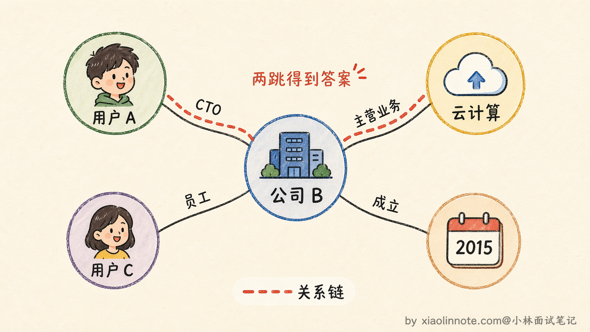
在 Agent 的记忆模块里引入知识图谱，通常是和向量数据库配合使用的。向量数据库负责处理模糊的语义检索（比如用户说「之前那个项目」，向量检索能找到最相关的项目记忆），知识图谱负责处理精确的关系推理（比如查某个用户的所有相关公司和角色），两者互补。具体做法是：对话过程中用 LLM 自动提取出实体和关系，存入知识图谱。检索时先用向量检索拿到一批候选记忆，再用知识图谱补充关联信息，最后把两部分结果合并后注入 context。
记忆整合：从碎片到知识
Agent 用久了之后，长期记忆里会积累大量的碎片化信息。同一个主题可能存了十几条不同时间的记忆，有些内容重复，有些已经过时，有些甚至互相矛盾。如果不做整理，检索时噪音越来越大，有用的记忆被淹没在无用的碎片里。
记忆整合就是定期对长期记忆做「清理和升华」的过程，它包含几个关键环节。
第一个环节是去重。把语义相近的多条记忆合并成一条更完整的版本。比如你存了「用户喜欢简洁的代码」「用户说过代码要精简」「用户要求不要冗余代码」三条，其实表达的是同一个意思，合并成一条「用户偏好简洁精练的代码风格，反对冗余」就够了。
第二个环节是冲突消解。当两条记忆互相矛盾时（比如「用户偏好 Python」和后来说的「最近转用 Go 了」），保留时间更新的那条，标记旧的为过期。这里时间戳就非常关键了，没有时间戳就无法判断哪条是最新的。
第三个环节也是最有价值的一个，叫做「抽象提炼」，本质上就是把情节记忆转化为语义记忆的过程。
什么意思呢？情节记忆存的是一次次具体的经历，比如第一次「用户让我写爬虫，requests 被反爬拦住了，换成 Selenium 才行」，第二次「用户让我抓某个电商网站的价格，页面是 JavaScript 渲染的，requests 拿到的是空页面，最后用 Playwright 解决了」，第三次「用户让我采集论坛帖子，同样遇到动态加载的问题」。
这三条情节记忆各自都是独立的事件记录，但把它们放在一起看，你会发现一个共同的规律：「当目标网站有动态渲染时，基于 HTTP 的简单请求库（如 requests）往往拿不到完整内容，需要用浏览器自动化工具（Selenium/Playwright）来处理」。
这条从多次经历中「蒸馏」出来的规律，就是语义记忆。它比任何一条情节记忆都更通用、更浓缩、更容易在未来的新任务中被检索命中。这个转化过程可以用 LLM 来自动完成：把一批相关的情节记忆喂给 LLM，让它总结出通用的知识和规律，然后把总结结果作为新的语义记忆存入长期记忆。
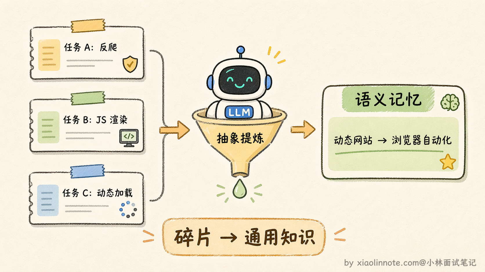
整合的节奏也很重要。每次任务结束后做一次轻量级的去重和更新就行，不需要大动干戈。然后每隔一段时间（比如每天或每周）再做一次深度的整理和提炼，把累积的情节记忆批量转化为语义记忆。有些框架（比如前面提到的 Mem0）已经内置了这种整合逻辑，它会在后台异步地对记忆做去重、冲突消解和提炼，你不需要手动触发。这样长期记忆会越来越精炼、越来越有价值，而不是越积越乱。
完整记忆模块的配合方式
把四层记忆和三个核心问题放在一起，来走一遍一次完整任务里它们是怎么协作的。整个过程可以用「读 -> 用 -> 写」三个阶段来描述。
第一阶段：任务开始前，先「读」记忆
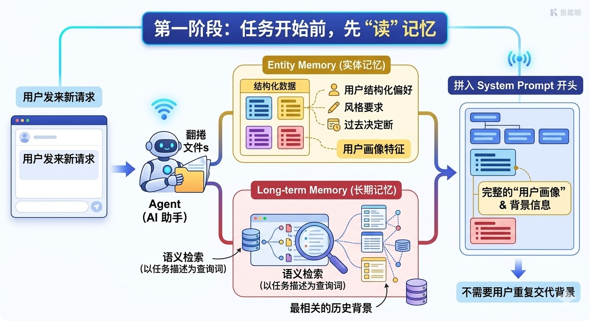
用户发来一个新请求，Agent 不是立刻开始干活，而是先去「翻档案」：从实体记忆里取出用户的结构化偏好（语言偏好、风格要求、过往决策），再用任务描述作为查询词，去长期记忆里做一次语义检索，拿回最相关的历史背景。把这两部分信息拼进 system prompt 的开头，Agent 进入任务时就已经带着完整的「用户画像」，不需要用户重复交代背景。
第二阶段：任务执行中，持续「用」记忆
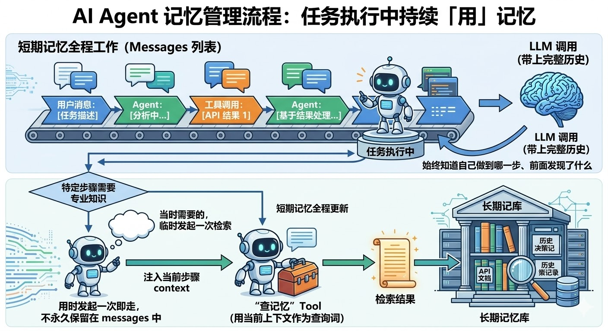
任务开始执行，短期记忆（messages 列表）全程工作：用户的每一条消息、模型的每一次输出、工具调用返回的每一个结果，都追加进 messages。每次调用 LLM 都把这份完整历史带上，Agent 始终知道自己做到哪一步、前面发现了什么。
如果某个执行步骤需要特定的专业知识（比如查某个 API 的文档、回想某次历史决策），Agent 可以临时发起一次长期记忆检索，把「查记忆」封装成一个 Tool，用当前上下文作为查询词，把检索结果注入到这一步的 context 里，用完即走，不需要永久保留在 messages 中。
第三阶段：任务结束后，主动「写」记忆
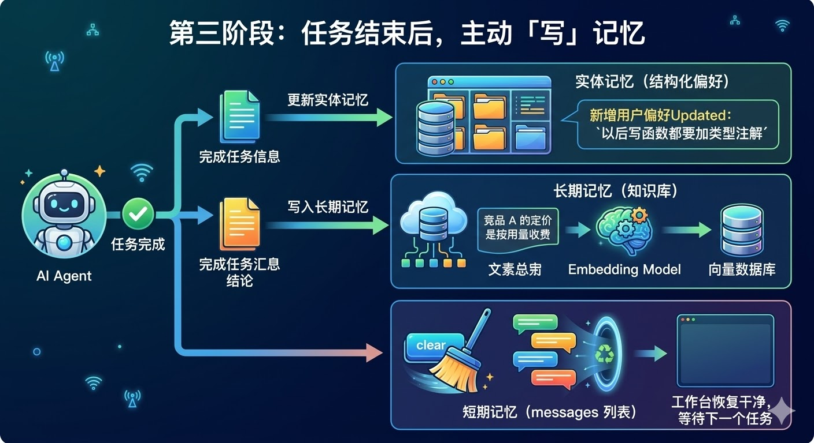
任务完成，进行最后一步：把本次任务产生的新知识写回持久化存储。具体来说，如果用户在对话中表达了新的偏好（「以后写函数都要加类型注解」），就更新实体记忆的对应字段；如果任务产生了有价值的结论（「竞品 A 的定价是按用量收费」），就把这条摘要写入长期记忆，embedding 后存入向量数据库，供下次检索。最后，短期记忆（messages 列表）清空，工作台恢复干净，等待下一个任务。
用流程图来看，整条链路是这样的：
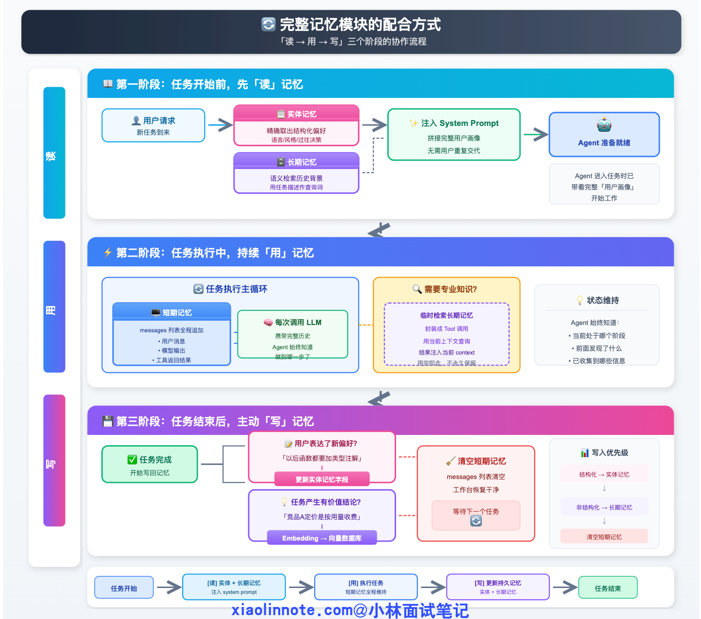
「读 -> 用 -> 写」三个阶段形成完整闭环：每次任务开始时把历史积累读进来，执行中靠短期记忆保持连贯，结束后把新知识写回去沉淀。Agent 用得越多，积累越厚，越来越「了解」用户，这才是记忆系统真正的价值所在。
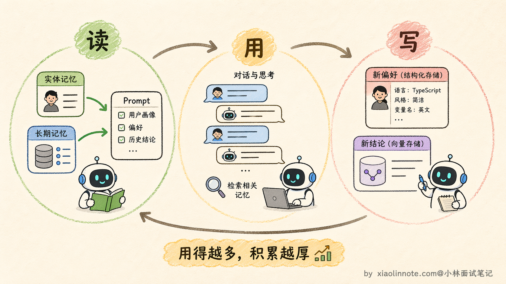
记忆系统的安全与评估
记忆不是“写进去就永久有用”。至少要记录 tenant/user 范围、来源、创建/更新时间、有效期、置信度和删除句柄；写入前过滤敏感信息，读取时做访问控制，更新时处理冲突，召回时保留原文和来源。长期记忆还可能携带提示注入或错误经验，不能直接覆盖系统规则或业务事实。
评估可拆成三层：记忆写入的精确率（是否把值得保留的事实写入）、召回的精确率/召回率（是否取对、是否漏掉）、以及对任务的净收益（完成率、错误率、延迟、token/费用和人工接管率）。同时测试跨租户泄露、删除后残留、过期事实和冲突事实，才能证明记忆真的改善了系统。
🎯 面试总结
回答 Agent 记忆机制这道题，先把四层分类说清楚：感知记忆是当次调用的原始输入，最短暂；短期记忆是 context window 里的 messages，维持任务状态；长期记忆是存在向量或关系数据库里、跨任务持久化的内容；实体记忆是从对话中提炼出来的结构化事实，信息密度最高。
说完分类，再答三个工程核心问题：存什么（只存对下次任务有价值的内容，过滤噪音）、怎么存（语义内容用向量数据库，结构化偏好用关系数据库，混合存储是主流）、什么时候取（任务开始前主动检索加载背景，执行中按需检索特定知识）。
最后用「读 -> 用 -> 写」三阶段闭环收尾，整个回答结构清晰、有深度，面试官很难挑剔。